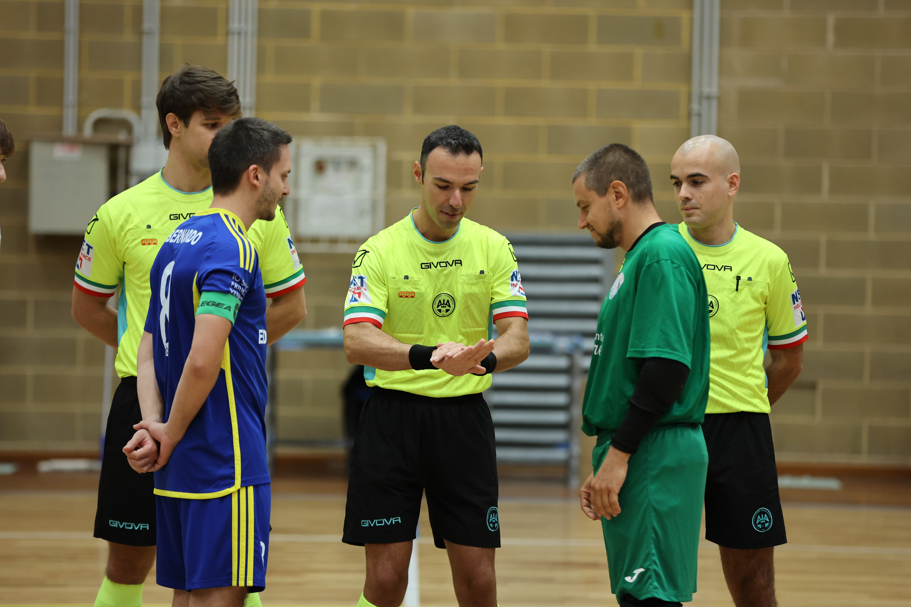

Seggiolai che devono crescere. Finisce 3-2 per uno Jesolo più cinico e solido
Prima sconfitta in campionato che brucia per il Manzano. I seggiolai sbattono sulla difesa di uno Jesolo organizzato e abile a concretizzare le poche occasioni. I padroni di casa tengono il possesso ma faticano a capitalizzare, gli ospiti pungono nel finale di primo tempo andando sul 2-0. La ripresa inizia subito con il tris dello Jesolo, pronta la risposta del Manzano per l’1-3 che poi non riesce a imbastire la rimonta. A 20 secondi dalla fine c’è il 2-3, ma ormai è troppo tardi. Gialloblù che peccano di lucidità e calma quando ci sono punti in gioco.
PRIMO TEMPO – Tanto possesso palla del Manzano in avvio che chiude lo Jesolo nella sua metà campo. La squadra di Criscuolo si chiude dietro e mette in mostra una buona difesa, affidando il suo gioco al lancio lungo e alle folate del laterale Vitinho.
Padroni di casa che cercano la porta soprattutto con Leonardo De Giorgio e Iurlaro. Tutti tiri ben amministrati da Morassi che si supera solo con la spaccata sul colpo angolato di De Bernardo dal limite. Chance ghiottissima anche per Fusco che riceve in area su corner a porta libera ma non riesce a controllare.
Lo Jesolo si vede poco davanti se non per due lampi di Finato. Le occasioni ospiti arrivano tutte nel finale, insieme ai gol. Vitinho cerca la porta da fuori e scheggia il palo, poi Pozzatello compie un grande intervento su Azzabi. Non si fa neanche in tempo a festeggiare che Finato scambia bene con Celin e deposita in rete l’1-0, a poco più di 4’ dal gong.
Raddoppio immediato dei veneti: Azzabi calcia, Pozzatello para ma El Bouchikhi è lesto a raccogliere la ribattuta. Si va a riposo sul 2-0.
SECONDO TEMPO – Ripresa che inizia male per il Manzano: il solito Vitinho va via sulla fascia e la mette in mezzo per Volini che fa 3-0. I seggiolai riescono a reagire: Salah ruba palla a Finato e guida il contropiede, servendo Fusco al momento giusto per l’1-3.
Rinfrancati dal gol i padroni di casa riprendono l’iniziativa, scontrandosi ancora col fortino dello Jesolo. In certi frangenti mancano anche la lucidità e la prontezza tecnica per cogliere gli spazi nelle difesa avversaria. Salah ci prova con un’azione personale venendo chiuso dalla deviazione di Azzabi. Pericolosi i soliti De Giorgio e Fusco, oltre alla coppia Iurlaro – De Bernardo che arriva due volte in area senza concretizzare. Altra grande occasione per Salah a 6’ dalla fine, ancora stoppato da un salvataggio di un difensore.
La squadra di Criscuolo non confeziona occasioni clamorose, se non il tiro di Finato da centrocampo che prova a sorprendere Pozzatello fuori dai pali.
Nel finale Movio e Sironi schierano il 5° uomo. La manovra paga con Leonardo De Giorgio che calcia e trova la deviazione di schiena di Fusco: 2-3. Mancano 20 secondi alla fine. Negli ultimi istanti punizione per i padroni di casa dove Morassi toglie dalla porta il 3-3, negando il pareggio al Manzano.
Prima sconfitta alla terza giornata. Ora serve crescere per adattarsi alla categoria. Prossimo impegno sabato prossimo per la trasferta in Sardegna sul campo dell’Elmas, squadra che ha vinto 2 partite su 3 e che l’anno scorso era arrivata seconda nel Girone A, venendo poi eliminata ai quarti di finale dei playoff.